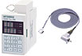

MELSEC-F series Positioning Control

The FX series offers low cost PLCs with built-in positioning instructions and pulse output blocks that can perform wide-ranging positioning control.
Additionally, dedicated positioning modules for complex control and multi-axis, interpolation control are also available.
High-speed output special adapter
| Model | Number of controlled axis |
Maximum frequency |
Applicable FX PLC | ||||||||||
|---|---|---|---|---|---|---|---|---|---|---|---|---|---|
| FX 3S |
FX 3G |
FX 3U |
FX 3GC |
FX 3UC |
|||||||||
| FX3U-2HSY-ADP | Independent two axes | 200 kHz | × | × | * ○ Max. 2 units |
× | × | ||||||
- *When used together with analog or communication adapters, function expansion board is required.
Pulse output block
| Model | Number of controlled axis |
Maximum frequency |
Applicable FX PLC | ||||||||||
|---|---|---|---|---|---|---|---|---|---|---|---|---|---|
| FX 3S |
FX 3G |
FX 3U |
FX 3GC |
FX 3UC |
|||||||||
 |
FX3U-1PG | Independent one axis | 200 kHz | × | × | *3 ○ Max. 8 units |
× | *1*3 ○ Max. 6 units |
|||||
| FX2N-10PG
Discontinued |
Independent one axis | 1 MHz(1 Hz to 1 MHz differential line driver output) |
× | × | ○ Max. 8 units |
× | *1*2 ○ Max. 8 units | ||||||
- *1When connecting to FX3UC, FX2NC-CNV-IF or FX3UC-1PS-5V is required.
- *2FX3UC-32MT-LT(-2): 7 units. FX3UC-**MT/D, FX3UC-**MT/DSS, FX3UC-16MR/D(S)-T: 8 units.
- *3FX3U, FX3UC supported from version 2.20 or later.
SSCNET
| Model | Number of controlled axis |
Maximum frequency |
Applicable FX PLC | ||||||||||
|---|---|---|---|---|---|---|---|---|---|---|---|---|---|
| FX 3S |
FX 3G |
FX 3U |
FX 3GC |
FX 3UC |
|||||||||
| FX3U-20SSC-H | Two axes (Independent/Simultaneous) |
- | × | × | ○ Max. 8 units |
× | *1*2 ○ Max. 8 units |
||||||
- *1When connecting to FX3UC, FX2NC-CNV-IF or FX3UC-1PS-5V is required.
- *2FX3UC-32MT-LT(-2): 7 units. FX3UC-**MT/D, FX3UC-**MT/DSS, FX3UC-16MR/D(S)-T: 8 units.
Positioning dedicated unit
| Model | Number of controlled axis |
Maximum requency |
Applicable FX PLC | ||||||||||
|---|---|---|---|---|---|---|---|---|---|---|---|---|---|
| FX 3S |
FX 3G |
FX 3U |
FX 3GC |
FX 3UC |
|||||||||
| FX2N-10GM | Independent one axis | 200 kHz | × | × | ○ Max. 8 units |
× | *1*2 ○ Max. 8 units |
||||||
| FX2N-20GM | Two axes (Independent/Simultaneous) |
200 kHz | |||||||||||
- *1When connecting to FX3UC, FX2NC-CNV-IF or FX3UC-1PS-5V is required.
- *2FX3UC-32MT-LT(-2): 7 units. FX3UC-**MT/D, FX3UC-**MT/DSS, FX3UC-16MR/D(S)-T: 8 units.
For FX2N-10GM/FX2N-20GM positioning teaching panel
| Model | Product |
|---|---|
| E-20TP-SET0 (with E-20TP-CAB0) |
FX2N-10GM, FX2N-20GM |
| E-20TP-E-SET0 (with E-20TP-CAB0) |
Angle control unit
| Model | Number of controlled axis |
Maximum frequency |
Applicable FX PLC | ||||||||||
|---|---|---|---|---|---|---|---|---|---|---|---|---|---|
| FX 3S |
FX 3G |
FX 3U |
FX 3GC |
FX 3UC |
|||||||||
|  | FX2N-1RM-SET*1 | One axis | 720 divisions/rotation (0.5 degree) or 360 divisions/rotation (1 degree) |
× | × | ○ Max. 3 units |
× | *2*3 ○ Max. 3 units |
|||||
| FX2N-1RM-E-SET*1 | |||||||||||||
- *1FX2N-1RM-SET is a Japanese domestic only product. For use overseas, please select FX2N-1RM-E-SET, which supports overseas standards.
- *2Extension cable cannot be used.
- *3When connecting to FX3UC, FX2NC-CNV-IF or FX3UC-1PS-5V is required.
PLC built-in pulse output functions and positioning functions
| Items | FX3S | FX3G, FX3GC | FX3U, FX3UC | |
|---|---|---|---|---|
| Number of axis | Two axes | [FX3G] Two axes (14/24 points) Three axes (40/60 points) [FX3GC] Two axes |
Three axes | |
| Number of controlled axis | Independent two axes | [FX3G] Independent two axes (14/24 points) Independent three axes (40/60 points) [FX3GC] Independent two axes |
Independent three axes | |
| Maximum frequency | 100 kHz | 100 kHz | 100 kHz | |
| Programming languages | Sequence programs | Sequence programs | Sequence programs | |
| Compatible main unit | Transistor output type main unit |
Transistor output type main unit |
Transistor output type main unit |
|
| Pulse output instruction |
Pulse Y Output (PLSY) |
○ | ○ | ○ |
| Acceleration/Deceleration Setup Pulse Y Output (PLSR) |
○ | ○ | ○ | |
| Pulse output type | Pulse train (Direction is controlled by PLC program) |
Pulse train (Direction is controlled by PLC program) |
Pulse train (Direction is controlled by PLC program) |
|
| Positioning instruction |
Absolute Current Value Read ([D]ABS) |
○ | ○ | ○ |
| Dog Search Zero Return (DSZR) |
○ | ○ | ○ | |
| Zero Return (ZRN) |
○*1 | ○*1 | ○*1 | |
| Variable Speed Pulse Output (PLSV) |
○ | ○ | ○ | |
| Drive to Increment (DRVI) |
○ | ○ | ○ | |
| Drive to Absolute (DRVA) |
○ | ○ | ○ | |
| Interrupt Positioning (DVIT) |
× | × | ○ | |
| Batch Data Positioning Mode ([D]TBL) |
× | ○ | ○*2 | |
| Pulse output type | Pulse train + direction | Pulse train + direction | Pulse train + direction | |
- *1No DOG search function Decelerate when near point DOG turns ON, and stop when near point DOG turns OFF (Different from zero return operation with zero signal count).
- *2FX3UC-32MT-LT supported from version 2.20 or later.
Optional parts and spare parts
Servo motor connection cable
| Model | Length | Description | |
|---|---|---|---|
| E-GMH-200CAB | 2 m | [MR-H series servo amplifer connection cable] Can direcly connect FX2N-10GM/FX2N-20GM and servo amplifer. I/O operation signal part has 20-pin connector for connection to Mtisubishi terminal block. |
|
| E-GMJ-200CAB | 2 m | [MR-J series servo amplifer connection cable] Can direcly connect FX2N-10GM/FX2N-20GM and servo amplifer. I/O operation signal part has 20-pin connector for connection to Mtisubishi terminal block. |
|
 |
E-GMJ2-200CAB1A | 2 m | [MR-J2, MR-J2-Super series servo amplifer connection cable] Can direcly connect FX2N-10GM/FX2N-20GM and servo amplifer. |
| E-GMC-200CAB | 2 m | [MR-C series servo amplifer connection cable] Can direcly connect FX2N-10GM/FX2N-20GM and servo amplifer. I/O operation signal part has 20-pin connector for connection to Mtisubishi terminal block. |
|
 |
E-GM-200CAB | 2 m | [General purpose connection cable] Has connector on both sides. Can connect to general purpose drive unit via Mitsubishi terminal block. |
Connector for self-manufactured I/O cable (an electric wire or a crimp tool is not enclosed.)
| Model | Description | |
|---|---|---|
 |
FX2C-I/O-CON | [Flat Cable Connector] AWG28 (0.1 mm2): A set of 10 pcs Crimp connector: FRC2-A020-3OS 1.27-pitch 20 cores Crimp tool: Separately arrange the tool manufactured by DDK Ltd. 357J-4674D Main Unit 357J-4664N Attachment |
 |
FX2C-I/O-CON-S | [Connector for bared wire] AWG22 (0.3 mm2): 5 sets Housing: HU-200S2-001 Crimp contact: HU-411S Crimp tool: A product manufactured by DDK Ltd. is separately required. 357J-5538 |
| FX2C-I/O-CON-SA | [Connector for bared wire] AWG20 (0.5 mm2): 5 sets Housing: HU-200S2-001 Crimp contact: HU-411SA Crimp tool: A product manufactured by DDK Ltd. is separately required. 357J-13963 |
|
Extension connection cable
| Model | Length | Description | |
|---|---|---|---|
 |
FX2N-GM-65EC | 65 cm | [Connection extension cable between PLC and FX2N-10GM/FX2N-20GM] One cable can be used in a system. Standard connection cable (55 mm) is included with FX2N-10GM/FX2N-20GM. |
| F2-RS-5CAB | 5 m | [Resolver extension cable for FX2N-1RM] Resolver can be extended up to 100 m extension by linking multiple cables. |
|
Connection cable for peripheral devices
| Model | Length | Description | |
|---|---|---|---|
 |
(1) E-20TP-CAB0 | 3 m | [E-20TP connection cable] FX2N-10GM/FX2N-20GM (MINI DIN 8-pin) ⇔ E-20TP (MINI DIN 8-pin) Cable length is different between (1) and (2). (1) E-20TP-CAB0 (3 m) is included with E-20TP-SET0. |
| (2) FX-20P-CAB0 | 1.5 m | ||
Spare parts
| Model | Length | Description |
|---|---|---|
| FX2N-GM-5EC | 55 mm | [Connection cable between PLC and FX2N-10GM/20GM] One cable is included with FX2N-10GM/20GM. |